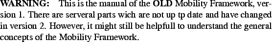

Next:
Contents
Up:
Home
Contents
Index
A Mobility Framework for OMNeT++
User Manual
Version 1.0a4
Marc Löbbers
Daniel Willkomm
loebbers|willkomm@tkn.tu-berlin.de

Contents
1 Introduction
1.1 What is the Mobility Framework for?
1.2 History
1.3 Authors
2 Overview
2.1 Concept
2.2 Using the Mobility Framework
2.3 Directory structure
3 Getting the Mobility Framework started
3.1 Installation
3.2 Creating an own network
3.3 Creating a new module
4 Building Own Simulations
4.1 The Basic Module concept
4.2 The Message Concept
4.3 The Nic Concept
5 Physical Layer Modules
5.1 SnrEval
5.2 Decider
5.3 P2PPhyLayer
6 Using the Blackboard
6.1 Methods for the subscriber
6.2 Getting informed
6.3 Methods for the publisher
7 Mobility Modules
7.1 The Mobility Architecture
7.2 ChannelControl
7.3 Implementing Mobility Models
About this document ...
Daniel Willkomm 2007-01-12